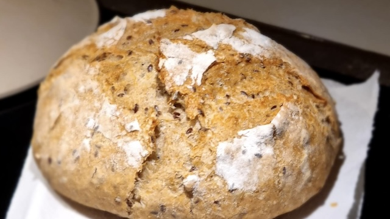

Grytebrød
Lager et lite brød, typisk nok for åtte porsjoner brød (16 tynne skiver)
Ingredienser
- 300g hvetemel
- 100g finmalt sammalt hvete
- 50g solsikkekjerner
- 25g linfrø
- 8g salt
- 3g tørrgjær
- 300g vann
Instruksjoner
- Bland sammen alle de tørre ingrediensene i en mellomstor bolle.
- Tilsett vannet og rør sammen til en deig.
- Dekk bollen et fuktig kjøkkenhåndkle og la deigen heve over natten.
- Sett ovnen på 230°C og sett inn en jerngryte med åpning ved lokket.
- Hell deigen ut på et melet underlag og brett den sammen til en rund ball.
- Dryss litt mel over deigen, legg kjøkkenhåndklet over igjen og la den heve i 30-60 minutter til.
- Ta den varme gryten ut av ovnen, fordel en skvett olivenolje i bunnen og legg deigen i gryten.
- Skjær et mønster i deigen, enten med saks eller en skarp kniv, sett på lokket og sett gryten tilbake i ovnen.
- Stek brødet i 30 minutter med lokk, og 15 minutter uten lokk.
- Ta brødet ut av ovnen og la det avkjøle på en rist.
Notat
Det er ikke strengt nødvendig å blande de tørre ingrediensene før man tilsetter vann,
men det gjør det lettere å fordele de jevnt enn å forsøke å fordele ingrediensene når
deigen allerede har tatt form. Bruker man en kjøkkenmaskin vil dettte være mindre viktig.
Det er heller ikke nødvendig å skjæere i deigen før steking, men det gir deigen bedre rom for å vokse,
og mulighet for å tilpasse utseendet av sluttproduktet.